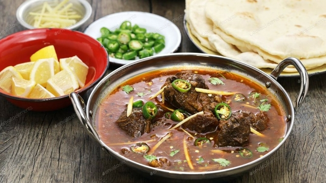

NIHARI RECIPE

DESCRIPTION
Nihari is a stew from the Indian subcontinent consisting of slow-cooked meat, mainly shank meat of beef or lamb and mutton, goat meat and chicken, along with bone marrow. It is flavored with long pepper (pippali), a relative of black pepper.
Etymology: Nihari originates from Arabic (nahâr), which means "morning". It was originally eaten by Nawabs in the Mughal Empire as a breakfast item after their Islamic morning prayer of Fajr.
History: According to many sources, Nihari originated in the late 18th century during the last throes of the Mughal Empire in the royal kitchens of Awadh, in modern-day Lucknow, Uttar Pradesh, India. It was originally meant to be eaten as a breakfast dish, especially in cold mornings, on an empty stomach.Nihari developed with the overall cuisine of Muslims of the Indian subcontinent. It is an old popular delicacy in parts of Bangladesh, particularly Dhaka and Chittagong. People cooked it for one whole night and they ate it in the early morning at sunrise. The dish is known for its spiciness and taste. It was originally more of a delicacy with myriad variations on spiciness and texture.
Popularity: Nihari is a traditional dish of Muslims of Lucknow, Delhi, and Bhopal in India . After the Partition of India and creation of Pakistan in 1947, many Urdu speaking Muslims from northern India migrated to Karachi and Dhaka, and established restaurants. In Karachi, Nihari became a roaring success and soon was found all over Pakistan. Now Nihari is available in Pakistani restaurants around the world. A particular favorite is nalli nihari, which is made with marrow added to nihari, and makes the stew very rich. In some restaurants, a few kilos from each day's leftover Nihari is added to the next day's pot. This re-used portion of Nihari is called taar and is believed to provide the unique flavor. Some Nihari outlets in old Delhi boast of an unbroken taar going back more than a century.
Medication: Nihari is also used as a home remedy for fever, rhinorrhea and the common cold.
Description content is taken from WIKIPEDIA.ORG
INGREDIENTS
- Whole Spices
- 1/2 piece of a small star anise
- 1-2 small bay leaves
- 1 inch piece cinnamon stick
- Ground Spices
- 2-3 whole cloves, ground into a powder using a mortar and pestle
- 2-3 green cardamom pods, seeds ground into a powder using a mortar and pestle
- 1/2 tsp fennel seeds, ground into a powder using a mortar and pestle
- 1/2 tsp paprika powder
- 1/2 tsp coriander powder
- 1/2 tsp cumin powder
- 1/4 tsp turmeric
- 1/4-1/2 tsp red chilli powder or cayenne
- 1/4 tsp crushed red chilli flakes
- 1/4 tsp black pepper powder
- 1/8 tsp garlic powder (optional)
- pinch nutmeg
- 1 tbsp Homemade Nihari Masala (recipe in post), or sub 1/2 tbsp store-bought
- Nihari
- 1/3 cup canola or other neutral oil
- 1 tbsp ghee, or butter
- 1 large (250-270 g) onion, thinly sliced
- 5-6 garlic cloves, crushed
- 3/4 inch piece ginger, crushed
- 1 1/4 tsp salt (sea salt or table salt), start with 1 1/2 tsp if using homemade masala
- 1/4 cup (35 g) durum atta flour, (Or sub dry roasted brown rice flour or sorghum flour for GF)
- 9 cups water for stovetop, 3 1/2 cups for slow cooker
- 1 lb (454 g) boneless beef shank meat, 2-inch cubed, or sub beef stew meat, 1 1/2 inch cubed
- Garnishing
- 1 tsp garam masala
- crispy fried onions
- 1 inch piece ginger, julienned
- 1 lemon, cut into wedges
- 1/4 bunch fresh cilantro, chopped
- 1-2 green chili peppers, chopped
EQUIPMENT
Any one of the following.
INSTRUCTION
- Stovetop
- Heat oil and ghee in a heavy-bottomed Dutch oven or pot over medium-high heat. Add the whole spices and onion, and sauté until the onion turns golden, about 10 minutes.
- If needed, deglaze with 2 tbsp of water. Once the water dries up, add the garlic and ginger and continue to sauté for 30 seconds. Add beef and sauté for about 5 minutes, or until it changes color.
- Lower the heat and add the powdered spices and salt and sauté for about 20 seconds. Immediately pour in the water and stir to mix.
- Raise the heat to high and bring to a boil (cover with lid to make it boil quicker). Then lower the heat to low/low-medium so that the nihari is gently simmering. Cover and allow to cook for 6 hours for beef shank meat (or ~4 hours for stew meat). Turn off the heat. The meat should be tender enough that it breaks easily when pressed with a wooden spoon. Remove the whole spices, if desired.
- Take out a cup of the liquid of the Nihari onto a bowl or measuring cup. Let it cool a little by adding an ice cube to it. Place the atta in another small bowl. Bit by bit, whisk the Nihari liquid into the atta to form a smooth slurry (small clumps are okay). Slowly stir this slurry back in to the Nihari pot to prevent clumps. If the mixture is too thick, add (preferably boiling) water to reach desired consistency.
- Raise the heat to high to bring to a simmer. Then lower the heat to low/low medium. Cover and allow the nihari to simmer for another 30-45 minutes. The consistency should be like a thick soup. Serve hot with the garnishing and naan or sheermal.
- Slow Cooker
- Heat a medium pot over medium-high heat. Heat oil and ghee and add the whole spices. Add onion and sauté until golden, about 10 minutes.
- If needed, deglaze with 2 tbsp of water. Once the water dries up, add the garlic and ginger and continue to sauté for 30 seconds. Add beef and sauté for about 5 minutes, or until it changes color.
- Lower the heat and add the powdered spices and salt and sauté for about 20 seconds.
- Carefully pour this beef mixture into your Crockpot or slow cooker.
- Add the water and stir to mix. Cook on low for 8 (for stew) to 10 hours (for shanks) or high for 6-7 hours, or until the beef is fall-apart tender. Cooking times will vary depending on your meat and slow cooker.
- Toward the end of your cooking time, remove your whole spices and take out a cup of the liquid of the Nihari into a bowl. Let it cool a little by adding an ice cube to it. Place the atta attain another bowl. Bit by bit, add the Nihari liquid to the atta to form a smooth slurry. Slowly add this slurry back into the crockpot while stirring to prevent clumps. Let it cook for another 30-45 minutes. Serve hot with the garnishing and naan or sheermal.
SOURCES OF CONTENT
- The picture of nihari is taken from DAIG.COM.PK
- The contents under the heading 'Description' are taken from WIKIPEDIA.ORG
- The content of nihari recipe is belongs to IZZAH.
- IZZAH is sharing the delicious food recipes from its website, TEAFORTURMERIC.COM
- You can get the full details of this nihari recipe from this link, EASY NIHARI.